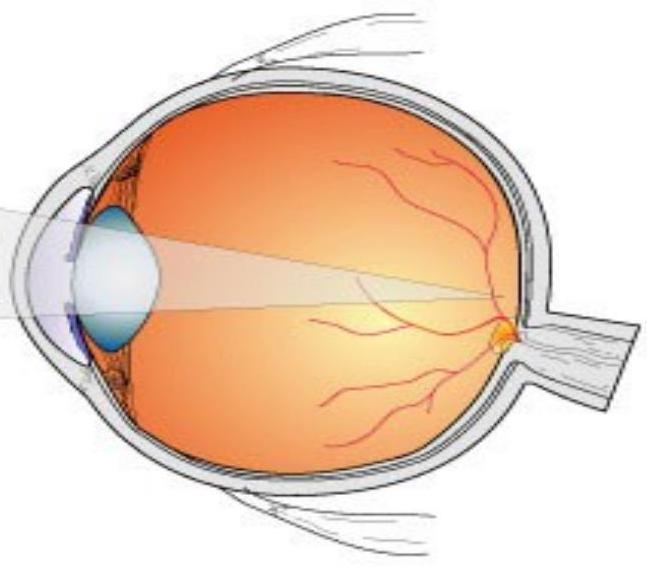
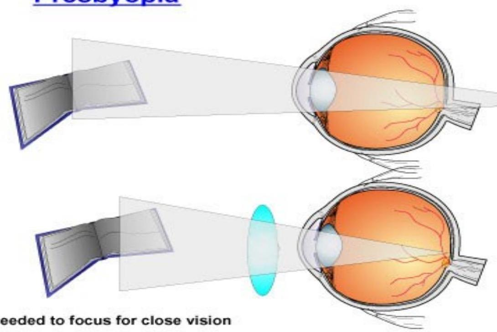
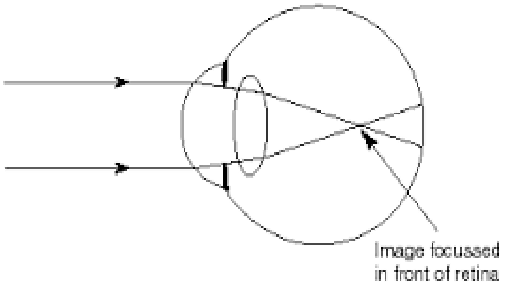
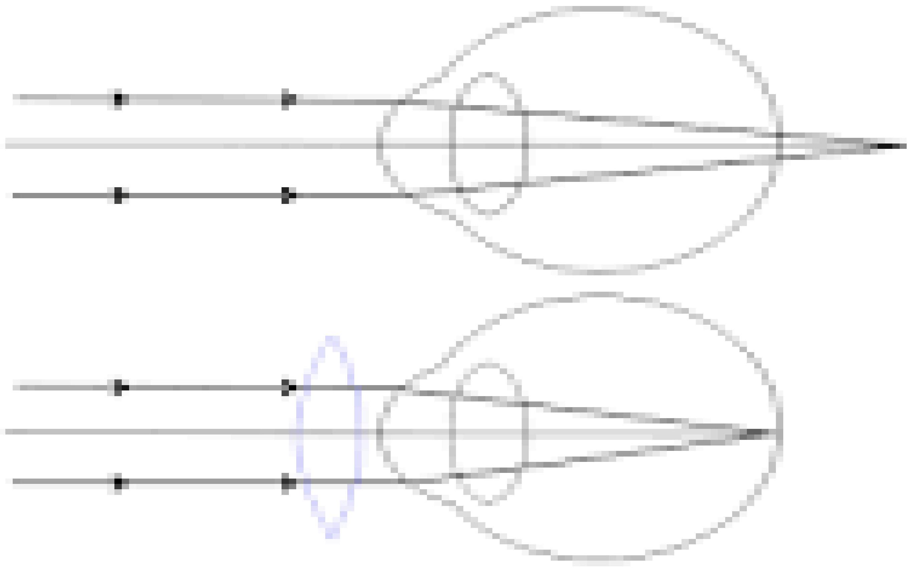

Disorders of the Pupil, Lens, and Refraction
Disorders of the Pupil
The pupil is the opening in the iris through which light enters the eye. The pupil constricts in response to:
- Increase in light
- Looking at a near object
Pupil light reflex depends on intact:
- Retina
- Optic nerve
- Oculomotor nerve
- Iris sphincter
A defect of the retina or optic nerve will cause an afferent pupil defect. A defect of the oculomotor nerve or iris sphincter muscle will cause an efferent pupil defect.
Relative Afferent Pupillary Defect (RAPD/Marcus Gunn Pupil)
It's a medical sign observed during the swinging flashlight test where the patient's pupil constricts less (therefore appearing to dilate) when a bright light is swung from the unaffected eye to the affected eye. This indicates a decreased pupillary response to light in the affected eye.
Horner's Syndrome
On the affected side, there is ptosis and the pupil is naturally constricted. It will still respond relatively to light but its 'resting' state is constricted. Signs include a persistently small pupil, anisocoria (unequal pupil sizes), and decreased sweating on the affected side of the face.
Third Nerve (Efferent) Palsy
The affected side will have an eye that points down and out, and a dilated pupil that does not respond to light. However, the contralateral eye will respond to light in the affected eye and will respond normally to its own light.
Disorders of the Lens: Cataract
A cataract is an opacity or cloudiness of the lens.
Types/Causes
- Congenital: Through maternal illness e.g. German measles
- Trauma: injury to lens capsule, dislocation following glaucoma operation, heat, irradiation etc
- Secondary to ocular diseases or uveitis.
- Systematic diseases e.g. Diabetes mellitus
- Senile cataract (most common): degenerative changes
Clinical Features
- Gradual painless loss of sight.
- Opacity of the lens.
Management = Surgery
The main treatment for cataracts is surgery to remove the clouded lens. Common procedures include:
- Intra Capsular Extraction: The whole lens is removed, cortex and capsule. Vision is corrected by thick glasses or contact lenses.
- Extra - Capsular Extraction: The posterior capsule of the lens is left behind. The anterior capsule is ruptured and the lens is expressed. An intra-ocular lens is then fixed.
- PhacoEmulsification: A high frequency ultra-sonic probe emulsifies the nucleus into small fragments which are then sucked out. A foldable intra-ocular lens (IOL) is inserted.
Pre and post-operative management involves patient education, hygiene, infection prevention, and managing intraocular pressure.
Refractive Errors
Emmetropia (Normal Vision)
Its the normal refractive state of the eye. The eye acts as a convex lens and parallel rays of light are focused on the retina.
Presbyopia
Around age 40, people begin to experience blurred near vision. This is the result of the natural aging process of the lens where it becomes harder and less elastic, reducing the ability to accommodate for near tasks. Treatment is with a convex lens.
 Myopia (Short-sightedness)
It occurs when the eyeball is too long, causing light to be focused at a point in front of the retina rather than directly on its surface. Treatment is with a concave or negative lens.
Hypermetropia (Long-sightedness)
In hypermetropia rays of light are focused behind the retina because the power of the optical system is too low for the length of the eye. Treatment is with a convex or positive lens.
Astigmatism
Occurs when the curve of the cornea is uneven, so light rays are not refracted equally in all directions, and a single focus point on the retina is not achieved. Treatment is with a spectacle with a cylindrical lens.
Strabismus and Amblyopia (Lazy Eye)
Strabismus (Misaligned Eyes)
The two eyes are not properly aligned and point in different directions. It arises because of an incorrect balance of muscles that move the eye, faulty nerve signals to the eye muscles and focusing faults.
Types of strabismus:
- Convergent squint - ESOTROPIA (eye turns in)
- Divergent squint - EXOTROPIA (eye turns out)
- Vertical squint- HYPERTROPIA (one eye is vertically misaligned)
Treatment: Early detection and referral for amblyopia treatment, spectacles, and/or surgery.
Amblyopia (Lazy Eye)
Definition: a reduction of vision of one or both eyes despite normal ocular finding.
Causes: certain types of refractive error, strabismus, sensory issues (e.g. cataract, Ptosis).
Treatment: Early referral to a better center. Treatment includes visual screening, vision therapy/patching, glasses, and surgical re-alignment.
Glaucoma
Glaucoma is a group of ocular conditions characterized by optic nerve damage. The optic nerve damage is related to the raised intraocular pressure which results from a blockage in the flow of aqueous from the ciliary body to the trabecular meshwork.
Classifications Of Glaucoma
- Open-angle glaucoma
- Closed angle glaucoma.
- Secondary/ normal tension glaucoma
- Congenital mostly in children
Open Angle Glaucoma / Chronic Glaucoma
Its caused by the Obstruction to the aqueous outflow due to defect in the drainage mechanism. Initially it is asymptomatic. Then the patient slowly loses peripheral visual field, and experiences cupping of the optic disc.
MANAGEMENT: Medical treatment to control the pressure is the treatment of choice (e.g. Pilocarpine, Timolol, Diamox). If medical treatment fails, surgery (Trabeculectomy) may be performed.
Closed Angle Glaucoma / Angle Closure Glaucoma
Common in older people due to a shallow anterior chamber causing obstruction to the drainage areas by the base of the Iris. May progress to an attack of acute glaucoma with severe eye pain, vomiting, a very red eye, a fixed and dilated pupil, and rapid loss of vision. This is an emergency.
MANAGEMENT: IV mannitol and Diamox to control pressure, followed by surgery (Peripheral Iridectomy).
Congenital Glaucoma (Buphthalmos)
Caused by maldevelopment of the drainage system. The infant presents with large, grey eyes and photophobia. Management is surgical (Goniotomy or Trabeculectomy).
Uveitis
It's the inflammation of the uveal tract - iris, ciliary body or choroid. Uveitis can have a more insidious onset and can involve any portion of the uveal tract.
Causes
- Infections
- Trauma
- Sympathetic inflammation
- Autoimmune
Clinical Features
- Severe pain in eyeball radiating to the forehead and temple.
- Photophobia
- Lacrimation
- Blurred vision
- Oedema of eyelids'
- Swollen discoloured iris
- Pupil is constricted
MANAGEMENT: The systemic disease should be treated with appropriate drugs/antibiotics. Atropine sulphate 1% is used to diminish congestion and prevent adhesion formation. Analgesics for pain and complete bed rest during the acute phase are recommended.
Complications: Adhesions, keratitis, secondary glaucoma, blindness.
Systemic Diseases and the Eye
Diabetic Retinopathy
Diabetes causes damage to blood vessels in the retina, which may lead to loss of vision. Risk factors include long duration of diabetes, high blood pressure, and high sugar levels. Annual eye checks are crucial for early detection. Treatment focuses on controlling blood-glucose levels and laser photocoagulation for advanced cases.
AIDS and the Eye
AIDS can lead to various ophthalmic manifestations, classified as microvasculopathy, tumors (Kaposi's sarcoma), neuro-ophthalmopathy, and opportunistic infections (herpes zoster, CMV retinitis).
- HIV RETINOPATHY: A non-infectious micro vascular disorder characterized by cotton wool spots, micro aneurysms, and retinal hemorrhages.
- HERPES ZOSTER OPHTHALMICUS: Caused by varicella zoster, it affects the eye through the ophthalmic branch of the trigeminal nerve. Treatment includes analgesics and antivirals like Acyclovir.
Treatment involves addressing the opportunistic infection and antiretroviral therapy.
Trauma (Additional Notes)
Foreign Body
Most foreign bodies are washed out by the patients own tears. Sub- tarsal foreign bodies lodge in the tarsal sulcus in the upper tarsal conjunctiva. Remove by everting the upper lid and wiping with cotton wool.
Chemical Injuries
The chemical likely to cause blindness is alkali e.g. washing soda, lime, ammonia. Alkalis penetrate the cornea and sclera, causing severe uveitis and necrosis.
TREATMENT: Immediate and very thorough irrigation with water. If the injury is severe, give antibiotic, atropine, steroids and refer urgently.
Penetrating Injury
Penetrating injury is a significant cause of blindness worldwide. Blindness results from damage to and loss of ocular contents, and infection. Always suspect a penetrating injury if there is a history of injury with a small fast object or sharp object.
Blunt Trauma
Blunt trauma is usually caused by a large relatively slow moving object, such as a fist or a stone. It can cause a range of injuries from a periorbital haematoma ("black eye") and sub-conjunctival haemorrhage to more serious conditions like hyphaema (blood in the anterior chamber).
Large hyphaemas may bleed again 24-48 hours after the injury, causing severe secondary glaucoma, and need to be managed with strict bed rest and possible surgical removal.